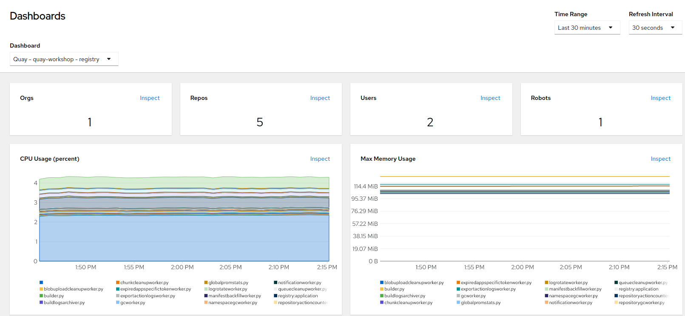
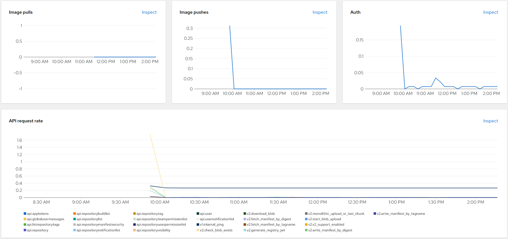

Quay Observability
OpenShift provides an onboard observability. The Quay Operator adds an embedded/integrated Quay Dashboard into the graphical OpenShift console; there is where we can observe the healthiness, rates, latency and more of our Quay registry.
-
Open a browser window and log in to the OpenShift Container Platform web console.
-
From the Administrator perspective, click Observe → Dashboards.
-
In the
Dashboarddrop down, selectQuay - quay-workshop - registry.

